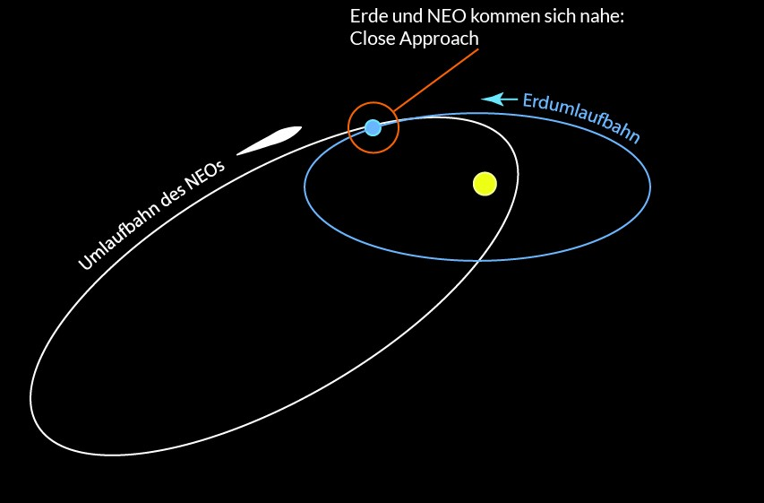

Name:
Distanz: km
Geschwindigkeit: km/s
Durchmesser: m
Das Objekt würde etwa Stunden benötigen, um die Erde zu erreichen, wenn es sich mit einer konstanten Geschwindigkeit von
km/s direkt auf die Erde zubewegen würde.
Dies nachfolgende Grafik zeigt die jüngsten Annäherungen von erdnahen Objekten (Near Earth Objects, NEOs) an unseren Planeten. NEOs sind Asteroiden oder Kometen, die in ihrer Umlaufbahn der Erde sehr nahe kommen können.
Ein "Close Approach" bezeichnet das Ereignis, bei dem sich ein NEO der Erde auf eine relativ geringe Distanz nähert. Diese Distanz wird in Kilometern gemessen und variiert je nach Objekt erheblich. Es ist wichtig zu betonen, dass ein "Close Approach" nicht bedeutet, dass eine Kollision mit der Erde bevorsteht.
